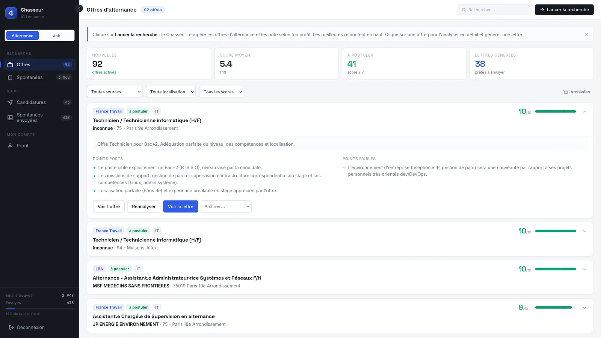
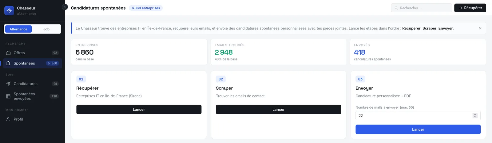
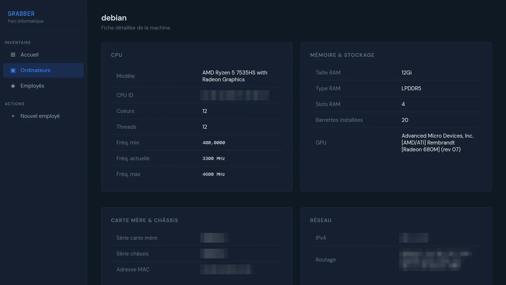

Étudiante en 2e année de BUT informatique, je cherche un stage DevOps de deux mois, du 8 février au 18 avril 2027.
Je travaille surtout sous Linux, en ligne de commande (j'ai installé Arch à la main sur mon PC). J'aime écrire des outils qui me font vraiment gagner du temps : une application qui gère ma recherche d'alternance, un assistant qui trie mes emails, un script qui inventorie un parc de machines. Avant le BUT, j'ai obtenu un diplôme DevOps au CNAM.
Ceux qui m'ont le plus appris. Pour chacun : pourquoi je l'ai fait, ce qui a résisté, et ce que je changerais.
Chasseur d'Alternance
Une application web qui automatise ma recherche d'alternance : elle récupère les offres, les note avec une IA selon mon profil, trouve des entreprises à démarcher et leur envoie des candidatures spontanées personnalisées. Chaque utilisateur a son compte et son propre profil.
Projet personnel, 2026. Python, FastAPI, SQLAlchemy, API France Travail, API La Bonne Alternance, API Sirene, Mistral, SMTP.
6 860 entreprises en base, 418 candidatures spontanées envoyées.

Les offres sont notées sur 10. En dépliant une offre, on voit les points forts et faibles relevés par l'IA, et la lettre de motivation générée.

Les candidatures spontanées en trois étapes : récupérer les entreprises, trouver leurs emails, envoyer.
Pourquoi
Ce genre d'outil existe pour l'alternance, mais il est payant. J'avais un besoin urgent, alors je l'ai codé moi-même : une application qui me fait gagner du temps et qui montre en même temps ce que je sais faire.
Le plus difficile
Comprendre les API de France Travail et de La Bonne Alternance. Leur documentation est très lourde, et il m'a fallu du temps pour identifier les bons appels parmi tout ce qu'elles proposent.
Ce que j'améliorerais
Le scraper d'emails, qui rate parfois les contacts de certains sites ou remonte de faux positifs. Et je veux aller au-delà de l'alternance, vers la recherche de stage et d'emploi (un premier mode « Job » existe déjà).
france_travail/analyseur.py (extrait)
client = Mistral(api_key=os.getenv("MISTRAL_API_KEY"))
MODELE = "mistral-large-latest"
# ... dans analyser_offre(offre, profil, mode) ...
# Appel Mistral avec retry sur rate limit (429)
response = None
for tentative in range(1, 5): # 4 tentatives max
try:
response = client.chat.complete(
model=MODELE,
messages=[
{"role": "system", "content": "Tu es un recruteur spécialisé en alternance. ..."},
{"role": "user", "content": prompt},
],
response_format={"type": "json_object"},
)
break # succes -> on sort de la boucle de retry
except Exception as err_api:
msg = str(err_api).lower()
est_rate_limit = "429" in msg or "rate" in msg
if est_rate_limit and tentative < 4:
attente = 15 * tentative # 15s, 30s, 45s
time.sleep(attente)
else:
raise # autre erreur, ou derniere tentative -> on abandonne
result = json.loads(response.choices[0].message.content)
if "score" in result:
result["score"] = max(1, min(10, int(result["score"])))
if not result.get("eligible", True):
result["score"] = min(result["score"], 2)
result["verdict"] = "faible"
Si l'API de Mistral renvoie une erreur de limite de débit (429), l'appel est retenté en attendant un peu plus à chaque fois. Ensuite, des règles fixes encadrent la réponse : le score reste entre 1 et 10, et une offre inéligible ne dépasse jamais 2.
Un assistant qui lit mes emails non lus sur Gmail, les classe et prépare une réponse. Les messages simples reçoivent une réponse automatique, les autres me sont soumis avant envoi. L'IA tourne en local avec Ollama : aucun email ne sort de ma machine.
Projet personnel, mon premier projet d'IA. Python, Flask, Ollama, Mistral 7B, API Gmail.
Pourquoi
C'était mon tout premier projet pour apprendre à intégrer un LLM dans un script, et à automatiser une tâche avec une IA.
Le plus difficile
Pas le code, mais le choix du modèle : trouver une IA open source, qui tourne en local, assez bonne pour rédiger des réponses correctes sans être d'une lenteur insupportable.
Ce que j'améliorerais
Passer à un modèle local plus performant, et affiner le prompt pour obtenir de meilleures réponses.
analyseur.py (extrait)
OLLAMA_URL = "http://127.0.0.1:11434/api/chat"
MODELE = "mistral"
def analyser_email(email):
prompt = f"""Tu es un assistant de gestion d'emails professionnel. Analyse cet email
et réponds UNIQUEMENT en JSON valide, sans texte autour.
# ... contenu de l'email et format JSON attendu ...
Règles de classification :
- SIMPLE : question fréquente, demande d'info générale, confirmation, accusé de réception
- COMPLEXE : réclamation, problème technique, demande personnalisée, situation délicate
- IGNORER : newsletter, publicité, notification automatique, email de système"""
reponse = requests.post(OLLAMA_URL, json={
"model": MODELE,
"messages": [{"role": "user", "content": prompt}],
"stream": False
}, timeout=120)
texte = reponse.json()["message"]["content"]
try:
match = re.search(r'\{.*\}', texte, re.DOTALL)
if match:
return json.loads(match.group())
except Exception:
pass
return {
"classification": "complexe",
"raison": "Impossible d'analyser automatiquement",
"resume": "Analyse manuelle requise",
"reponse_proposee": "",
"langue": "fr"
}
Si la réponse du modèle est illisible, l'email n'est jamais envoyé au hasard : il part en relecture.
Un outil d'inventaire de parc informatique. Un script Bash relève la configuration de chaque machine (processeur, mémoire, carte graphique, réseau) et l'envoie à une API, qui l'enregistre et l'affiche dans une interface web. On y gère aussi les employés et les ordinateurs qui leur sont attribués.
Projet de formation, 2025-2026. Bash, Python, FastAPI, PostgreSQL, Docker Compose, Caddy.

La fiche d'une machine, remplie automatiquement par le script. Les identifiants matériels et réseau sont floutés.
Pourquoi
Un projet mené en classe pendant l'année, essentiel pour apprendre à gérer un parc informatique de bout en bout.
Le plus difficile
Les relations many-to-many entre employés et ordinateurs : structurer les tables proprement, puis réussir à envoyer et recevoir les données sans erreur. Ça a été assez mouvementé.
Ce que j'améliorerais
Le design de l'interface, et des fonctionnalités qui aillent au-delà des seules informations système.
Un outil en ligne de commande pour créer et modifier un fichier docker-compose.yml sans l'éditer à la main. Avant d'ajouter un service, il vérifie que l'image existe sur Docker Hub, et chaque modification est consignée dans un historique.
Exercice de formation, 2026. Node.js, js-yaml, API Docker Hub.
projet_2_javascript $ node docker-compose-cli.js stack.yml init
✅ Fichier "stack.yml" initialisé avec succès.
projet_2_javascript $ node docker-compose-cli.js stack.yml add-service web nginx
🔍 Vérification de l'image "nginx" sur Docker Hub...
✅ Service "web" ajouté avec l'image "nginx".
projet_2_javascript $ node docker-compose-cli.js stack.yml add-service db postgres
🔍 Vérification de l'image "postgres" sur Docker Hub...
✅ Service "db" ajouté avec l'image "postgres".
projet_2_javascript $ node docker-compose-cli.js stack.yml add-service api image-qui-nexiste-pas
🔍 Vérification de l'image "image-qui-nexiste-pas" sur Docker Hub...
❌ L'image "image-qui-nexiste-pas" est introuvable sur Docker Hub. Service non ajouté.
projet_2_javascript $ cat stack.yml
services:
web:
image: nginx
db:
image: postgres
networks: {}
volumes: {}
Démo réelle : deux services ajoutés, puis une image inexistante refusée.
Plus courts, mais chacun m'a appris quelque chose.
Chatbot IA local
Un chatbot qui fonctionne hors ligne sur ma machine, avec une mémoire de conversation et une personnalité configurable.Python, Flask, Ollama, Llama 3.1
Site vitrine multilingue réalisé pendant mon stage au Garage Numérique. Une IA locale lit les demandes de visite reçues par email et met à jour le contenu du site.Python, Pelican, Jinja2, Ollama, IMAP et SMTP
Code non public (confidentialité)
Auburn and Cream
Site vitrine multi-pages pour un coffee shop, en HTML et CSS.HTML, CSS, responsive